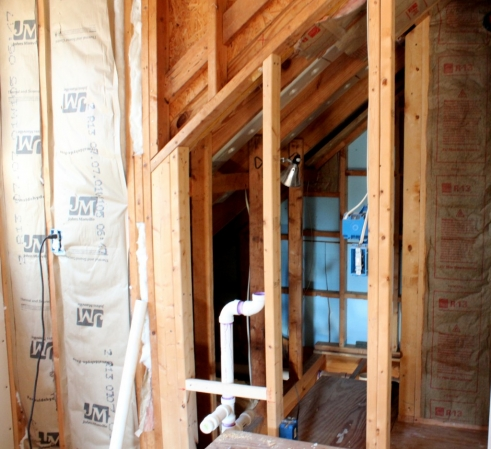
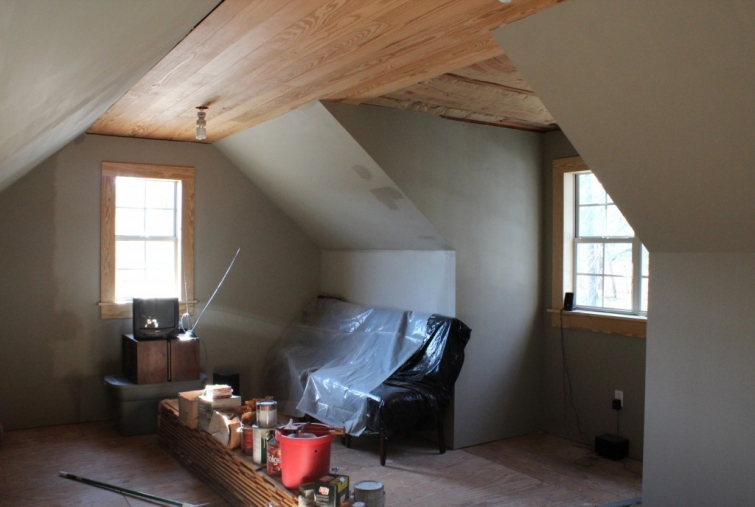
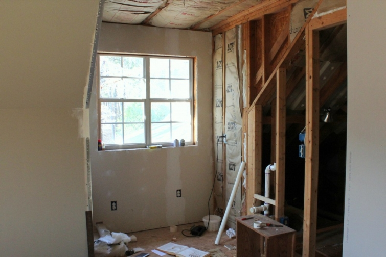

.png)
.PNG)
.PNG)
.PNG)
.PNG)
.PNG)
.JPG)
.JPG)
.PNG)
.PNG)



We have lived here since 1996 with an unfinished space over the garage. It would have been nice to have it as another room when all the kids were growing up, but there were many other do-it-yourself projects over the years that took precedent. So the poor little room never got any attention (plus it made great attic storage for surplus furniture.) Recently, my husband has gotten motivated to complete the space. He has been working up there practically every night…finishing the walls, putting up the ceiling, installing plumbing, etc.
Here is what the room looks like now. Ignore the chairs covered in plastic. I plan to sell them. Ignore the Al Gore bulb. It’s temporary, and ignore the paint color. That is primer on the walls.

The photo at the top of the post is where the teeny tiny half bath will be located. The dormer space below will be a very small kitchenette area with a microwave, refrigerator, sink, and maybe some kind of cooktop.

Now here is where you will begin to understand my title “Inspired and Confused.” When I first started envisioning this space, I saw it as a den used as another hang out space…something like this (without a glass topped coffee table):
But as the kids have gotten older and moved away to college and on their own, the need for that space diminished. I then began to dream of it being used for my own office/studio where I could do lettering projects, sew, or anything else my little creative self wanted to do. (The heck with everyone else!) I could even turn into Martha with a beautiful green cabinet craft room just like hers.
Or perhaps it could be something more simple, but still a great workspace like this…

or this. homedit.com
homedit.com
But then…one night I was up there alone and I could hear something scurrying downstairs in the garage. And then the dog began to bark. (Yes, he does that a lot.) And so it was that this chicken girl decided that her husband could have the room over the garage for his office, and the current office inside the warm and cozy house would be hers. 🙂
But then…middle child decided to move back home for awhile after college, and that room might make a great space as an apartment for him. I found the perfect inspiration in these photos to really make the room over the garage into something special. Take a look:
I thought it was ideal for a twenty something year old. But then…he is planning on moving out to go back to school, and he won’t be needing the apartment. So I began to rethink the use of the room again.
This room then became my inspiration for what could be done with the space (obviously not an attic, but I could use many of the color and fabric ideas from the room.)
 foundbydomesticbliss.blogspot.com
foundbydomesticbliss.blogspot.com
And the kitchen area could have cabinets and shelves similar to these: foundbydomesticbliss.blogspot.com
foundbydomesticbliss.blogspot.com
I really thought I had found a direction for the room. But the more I studied the photos, the more I felt that it wasn’t quite right for this house. I couldn’t put my finger on what was the problem until I found this photo that made my heart go pitter-patter:

I love it. Don’t you think it suits this house more than the other style? And I can see it as my husband’s work area tucked into one of the dormer spaces (without the bookcase unfortunately.) I think the problem with the other inspiration photo was that it was lacking in warmth and color, while this one has that dose of tan and a little red that I always seem to want in a room.
And to go with it, I also found this photograph… srgambrel.com
srgambrel.com
and this photograph. (Both made my heart go pitter patter, too. 🙂 ) restyleresource.com
restyleresource.com
Neither of these are actual spaces that I can copy, but they give me a good feel for the use of some linen with red in the room – and we are planning on it being my husband’s work space. So now I have a direction to go thanks to more inspiration (and perhaps a paint color thanks to the desk-in-the-window photo above.) Maybe by the time the room is at the “decorative decisions” phase, I will be able to make some choices. I guess it is a good thing it has taken 17 years to finish! 🙂
Which of the inspirational rooms do you think would be the best?
I’d love to hear.


.PNG)
Love all of your ideas! I can’t wait to see what you do with it. I’m loving the last ones you posted because you seemed to like those best and think they fit best. I’m such a firm believer that what you love is what is right…there are no right answers. It’s your home after all. Excited to see the final product!
———————————————————————
Lindsay – Thank you for your sweet comment! I, too, believe you should love what you put in your rooms and not be bound by trends. And obviously, I do love red. But goodness at all the beautiful color ways I saw yesterday in fabrics in Atlanta…I could love most ANY color after seeing all of them.
Kelly
Love all the images…especially the first one…so Candice Olsen…and I love the red and white fabric and your inspiration room….that room is so very cozy…a perfect choice…Have fun designing the room…even though it is a bit in the future!…Have a great weekend!!
———————————————————————-
Shirley – Weren’t all those red and white fabrics great?! Love them. I saw lots of great red and white fabrics yesterday in Atlanta…too many to choose from.
Kelly
First, I really like the shape of the room and the wood ceiling! Good job, TOTH husband! And I agree, there is something of a kindred spirit to your house in that last photo. I think it’s because it’s not so monochrome as the rest. I think we’ve shared with each other before that that particular trend is probably, at least partially, due to how well those spaces photograph. That last space shares a depth and richness with your house that is warm and inviting.
————————————————————————-
Julianna – My husband says “thank you” for the compliment! And I say thank you for the “warm and inviting” compliment. The monochromatic rooms look so calm in the photos, but once you add snacks, kicked off shoes, and newspapers, they probably don’t look as good in real life; do they? 🙂 Or at least that is what I tell myself.
Kelly
I am just envious you have attic space to renovate and decorate! I know you chose each picture because there was something you loved in each. Why not take what you love about each and mold it together into your own? You are so good at that!!!!!!
——————————————————————–
Wanda – We have never had an upstairs room anywhere to decorate, and I have wanted one since I was a child. So this is going to be fun! I am even looking forward to doing something with the stairs. Yes, there are things I loved in each photo…the daybed in the “boy” space, the neutrals in the gathering space, and the planks and colors in the desk space photo. I will see what I can do like you said with these details. And then I found sooo many fabrics to love yesterday in Atlanta…too many good things to choose from!
Kelly
Hi Kelly, What great inspiration photos you’ve collected for this project/space. There is something to love in each and every one of them. When I read this post and all the thoughts you’ve had on it, I tend to agree with Leslie’s ideas the most. It would certainly solve the issue you were having a couple months ago when you were trying to figure out how to fit larger beds into your son’s bedroom. If your oldest son is anything like mine I bet he would welcome the privacy that such a space would afford him while he is temporarily hanging out at your home. I guess I would think in terms of “mother-in-law” suite and try to squeeze in one larger bed or a good quality hide-a-bed or even a Murphy bed if you have one larger blank wall in the space. I love that the space will have a half bath and a snack area for making popcorn etc. You also will have a lot of short walls below the slant ceilings and I think you could add some shorter bookcases in some of those areas for your husbands things. Last but not least you could have weekend getaways with your husband and never leave home!! 😉 Good luck, it will be fun to decorate.
———————————————————————-
Rose – My husband loved your idea of the weekend getaway! 🙂 We will be inheriting a sofa in the next couple of weeks to use up there. I think a sleeper sofa, as you said, would be a very smart option for it, but unfortunately the sofa we are getting is not one. I hope we will be able to replace the “inherited” sofa down the road with a sleeper though. I could possibly squeeze in a daybed somewhere, but being that this is going to be my husband’s “work” place to possibly work with clients, I still want to keep it as professional as I can…Now if it were MY space, it would definitely have a daybed…for naps! 🙂
Kelly
Your story is a perfect description of what really goes on when doing home design!!
———————————————————————
Barbara – You mean everyone is as indecisive as this?! LOL You have to know the use of the room before you can figure out how to best use and decorate the space. The use is what has been the hold up for me with this room.
Kelly
Kelly,
This is a post filled with great ideas. I can see the possibilities and know you’ll make the space fabulous, no matter who ends up using it. I’m with you, let Hubby use that space, scurrying creatures won’t concern him! lol. It will be so much fun for you to decorate the room and I love some of the inspiration photos you’ve shared. Keep us posted.
Karen
———————————————————————–
Karen – Thanks for your vote of confidence! It will be a fun space to do. We were in fabric shops in Atlanta yesterday, and I kept seeing fabrics I loved and saying “ooh this would be great in the room over the garage.” I had to keep reminding myself I was SUPPOSED to be shopping for fabric for the sofa in the great room! (Didn’t buy any though.) One project at a time…I did fall in love with this matelasse that I just have to find a spot for: http://forsythfabrics.com/detail.aspx?ID=4762 AND they had it in red (although I loved all the colorways.)
Kelly
Love your pictures and you have so many options for that room a restroom and kitchen area. Just wondering if you have a place for when the kids return home to stay? Eventually there will be others with them and it is nice to have a nice place for them to stay. Having their own bathroom would be wonderful for the spouses and if there are babies with them – you would be able to sleep and not wake up with their parents. So although it will be an office space for your husband, you might want to make this into a place for visitors for the short time they are at your home.
———————————————————————-
Leslie – You are right. I need to think of that, but all my children tell me that is sooooo far in the future. LOL A sleeper sofa will probably be in the picture at some point (but moving one of those up the stairs is not something I even want to think about!) Oh my goodness they are heavy.
Kelly
Oh- What a wonderful space. I LOVE ALL your inspirations, Holly. I am so glad that you are going to get it finished. There are some spaces that are good to just “give over” to someone else-and it sounds like it will work for the hubby. Now do you get to redo HIS room as YOUR OWN soon? xo Diana
——————————————————————–
Diana – I will be doing over the current office some…especially the closet space. I also want to put a window seat in there..which is something we had planned to do when we moved in years ago. The first order of business for that room though is to get rid of the old carpet. The subfloor would be better than the condition of the carpet that is currently in there!!
Kelly
The thing about a room like that is that it could be any number of things – at the same time. Office/guest room/den/rec room. Wouldn’t take much to change the uses up – especially if you already have plumbing in there! (Love those attic dormer window spaces – always so enchanting to work with!)
————————————————————————
Sarah – You are right about all the options available. I think that is what is confusing me! LOL. Actually, if it is my husband’s space, it needs to stay professional looking for meetings with clients when he retires and does consulting work. That is why I can’t combine it to make it the boys’ space. (It would NOT look professional with them in there. 🙂 ) But it certainly could have a sofa sleeper for occasional sleepovers of guests.
Kelly
I like them all but the final picture looks awesome! I love the wood on the ceiling too….totally warms up the space! Good choice
———————————————————————-
Karen – So glad you liked the inspiration photos. I will be happy when all of the ceiling is finished with that wood. It makes such a difference in the room. We should have done the walls in planks, too, but as my husband pointed out, that would have been quite a bit more costly. I need to win a lumber mill!
Kelly
Kelly I love the last photos for your husband’s office space. I too love red (my kitchen cabinets are red) so of course I would use any of those fabrics. Steven Gambrels window seat is gorgeous and if you could recreate that I would be sooooo jealous! Lowes had an double hung Edison light that would look great hung over a long desk similar to the pic.
————————————————————————-
Kelly – I would love your red kitchen cabinets! Thanks for the heads up on the Lowes’ light. I can’t wait to start shopping for all the fun decorative things that really make a room. Lowes will definitely be one of my go-to places for things (especially since all the wood and plumbing supplies have been from there, too!)
Kelly
We had an attic space in our town house that we converted to a man cave/ grandkids play room. Really it is a place for my hubs to watch sports while I watch HGTV. It also has plenty of shelves for books as well as a built in desk for the pc. Then there is a nook with all the grands toys and finally a trundle bed for the grands when they sleep over. My husband insisted on a full bath up there and while I was skeptical at first, it was the right decision with grands staying overnight up there. I also have a little room off the man cave where I do crafts so it is really a useful space. I like all your ideas and look forward to seeing what you decide to do with your bonus room.
——————————————————————-
Arlene – Your room sounds wonderful and perfect! I don’t think our space is big enough for all of that, but I love the idea of the trundle bed. (And I especially love the idea of the crafts space right off of the room.)
Kelly
First off………..LOVE it!!! What a fun project. I’m totally in love with that rope chandelier. The bottom 3 photos remind me of your house or what I can see from pictures…and I bet hubby is excited to get an office space (secretly I would rather have the house office too, then it is all MY decorations!) 😉 Although he would let me decorate because he doesn’t care about those things he may not KEEP it all beautiful, so better to give him the garage room! I love all the styles and textures of those linens together…..beautiful and cozy. Can’t wait to see what you do!!
———————————————————————-
Jennifer – Your logic is so smart about not keeping the room neat! The only thing about not having the over-the-garage room is that it is about 3 times the size of our current office, and I could sure use a lot more space…but oh well. Once we move all of his office things out, it should be fine (especially the closet stuff!) We currently have 3 computer work stations in our one little home office, and it is right…um…cozy. (That’s a nice way to put it!) I can’t wait to see the project finished too. 🙂
Kelly
All of your inspiration photos are gorgeous. Since it’s going to be hubby’s office, I think the one you chose is just perfect. We have a similar room with dormers that is going to be our teenage son’s room ~ the room with the daybed and trunk is giving me some great ideas for that space. Can’t wait to see how your room turns out!
———————————————————————-
JoAnne – I loved that daybed and trunk room too! I think I remember that being in Cottage Living many years ago. So glad I could give you a little eye candy for your space.
Kelly